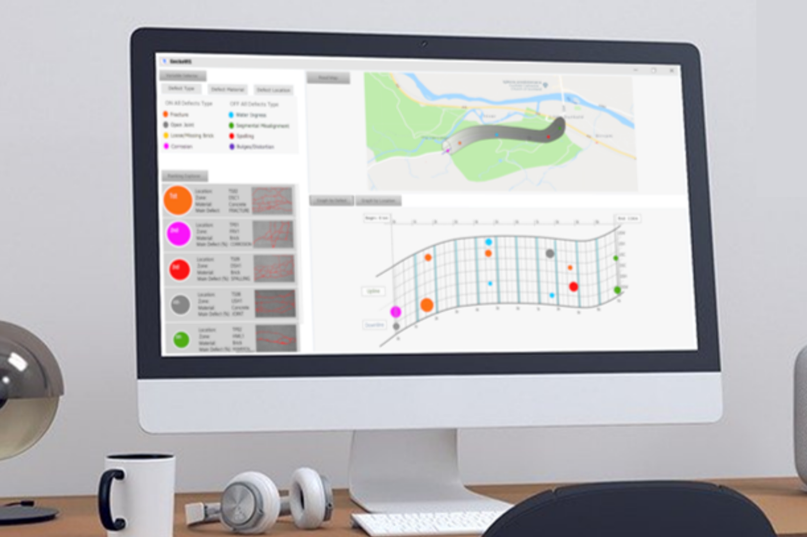
2D/3D Visual Analytic Tool
Tool for structural condition monitoring — C++, Unreal Engine, Blender.

Tool for structural condition monitoring — C++, Unreal Engine, Blender.
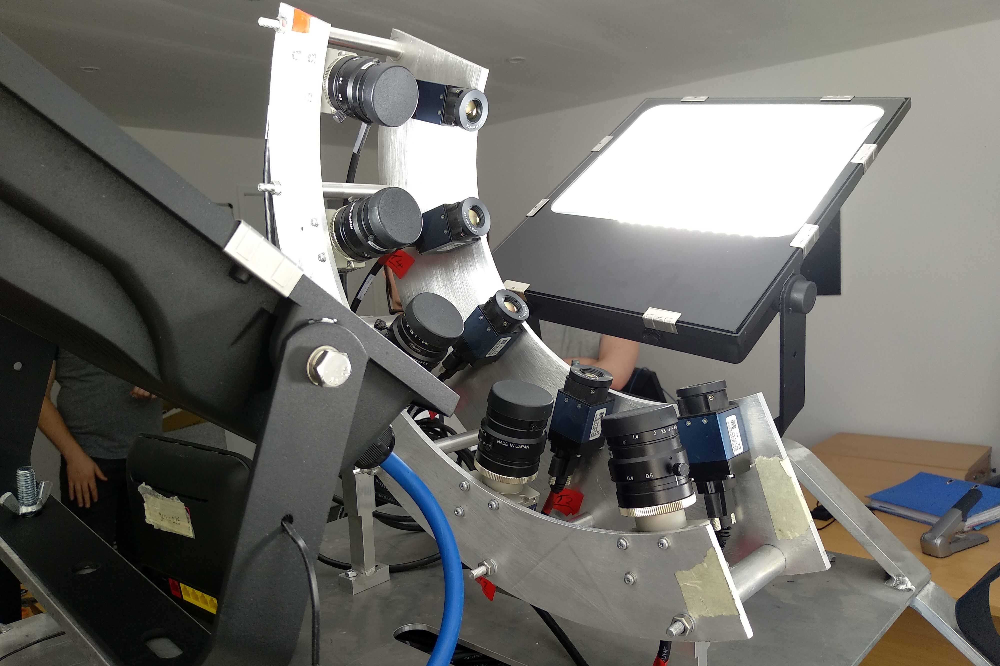
Optical-thermal rig for railway tunnel inspections — AutoCAD, SolidWorks.
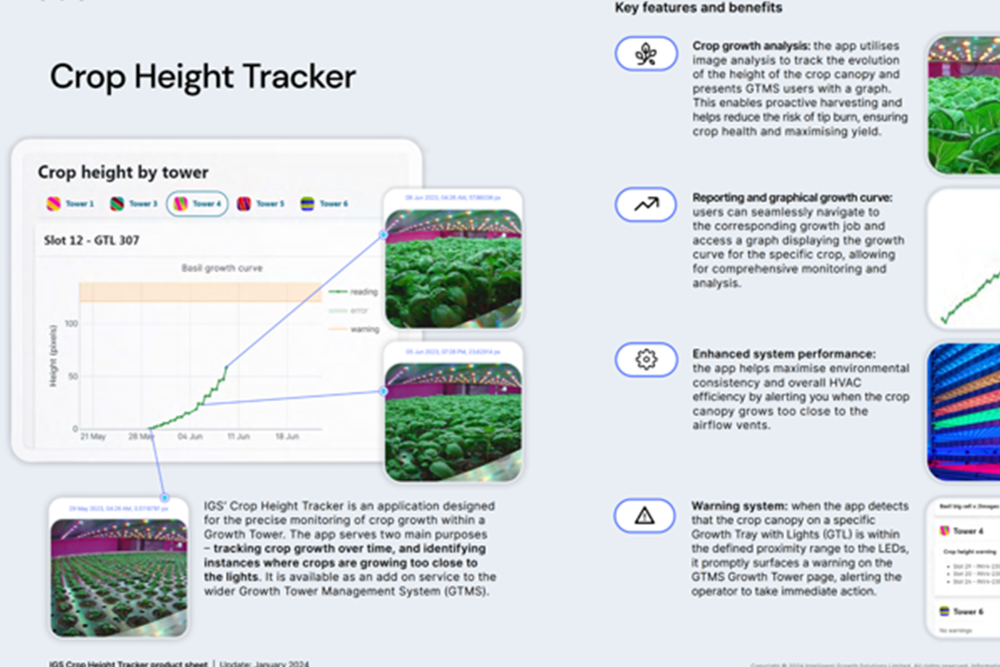
AI Plant Monitoring Interface — Azure, TypeScript, Angular, Plotly.js. Feb–Aug 2022.
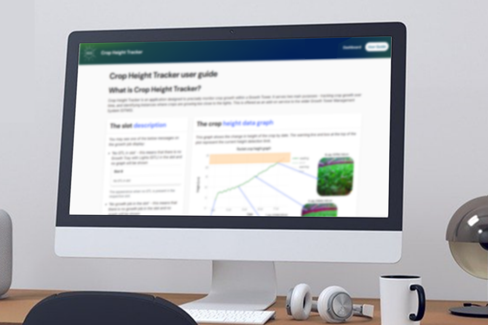
User guide for the IGS Crop Height Tracker — documentation, tutorials, API reference.
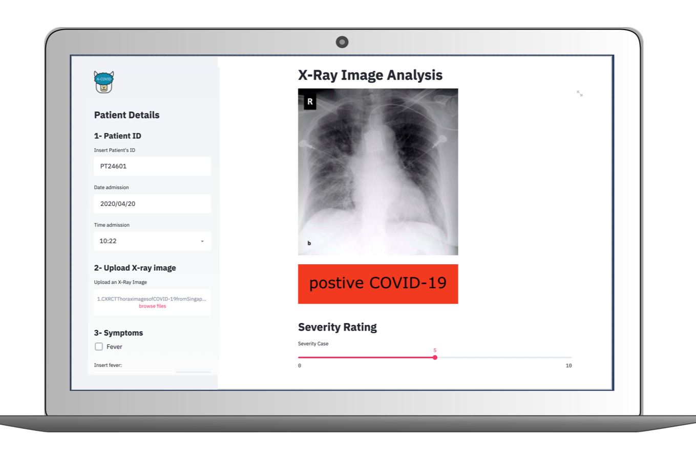
Prototype tool to aid first diagnosis from chest X‑rays — Streamlit, Python. 2nd place at CoronaHack.
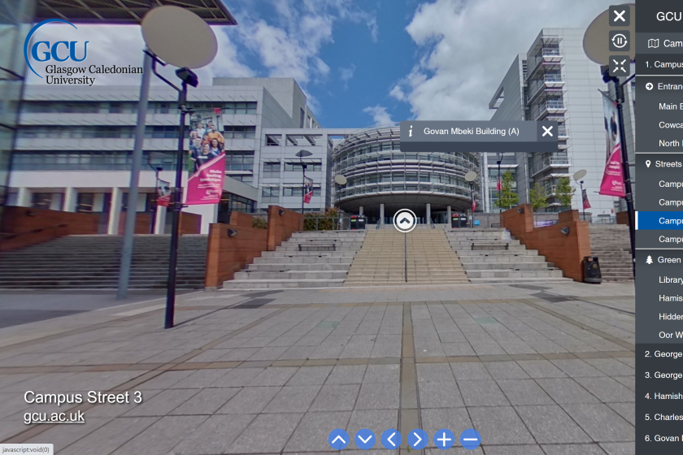
Interactive 360° campus tour — Marzipano, Ricoh Theta. Conference paper and open-source code.
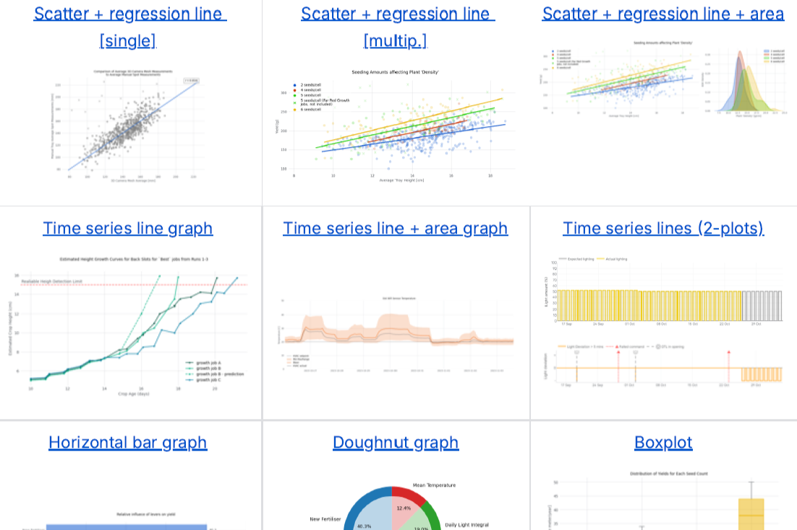
Standards, catalogue and python package for consistent plots — matplotlib, plotly, holoviews.
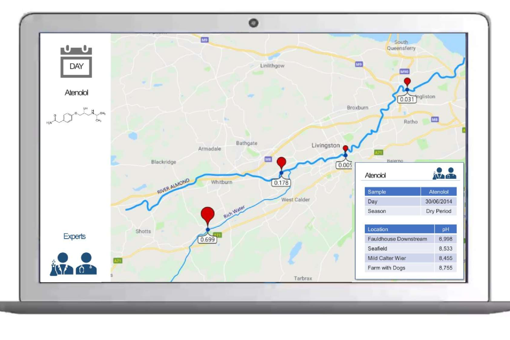
CREW project: visual solutions to communicate pharmaceutical concentration in water.
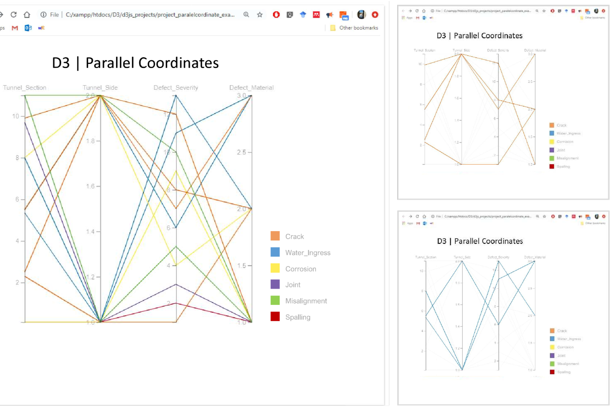
Exploration of D3, Potree, ggplot2 for interactive 2D/3D visual analytics.
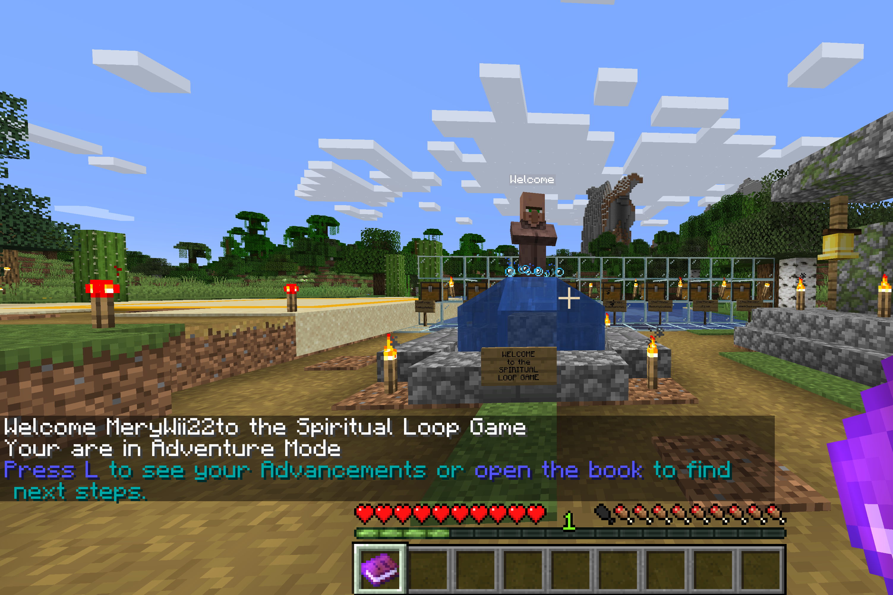
Minecraft mod to promote socialisation and inclusion for neurodivergent people in religious communities.
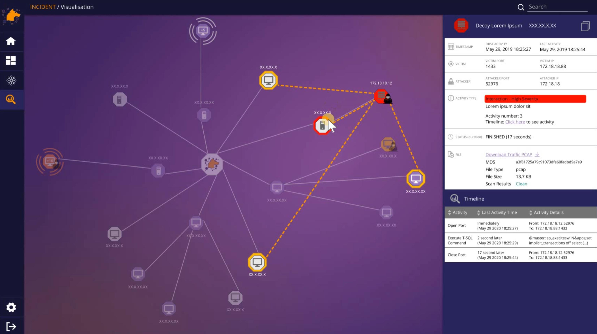
Cybersecurity visualisation system to support operator analysis and threat response.
An Enhanced Photorealistic Immersive System using Augmented Situated Visualization within Virtual Realit
Iglesias, M. I., Jenkins, & Morison, G.
Manuscript submitted for publication (2020)
A 3D Visual Inspection System for Structural Condition Monitoring and Analysis
Iglesias, M. I., Jenkins, & Morison, G.
Manuscript submitted for publication (2020)
Rapid Development of a Low-CostWeb-Based 360 Virtual Tour
Iglesias, M. I., Jenkins, M. D., & Morison, G.
In Proceedings of the 16th International Conference on Web Information Systems and Technologies 2020 (WEBIST 2020)
A Deep Convolutional Neural Network for Semantic Pixel-Wise Segmentation of Road and Pavement Surface Cracks
Jenkins, M. D., Carr, T. A., Iglesias, M. I., Buggy, T., & Morison, G.
In Proceeding of the 26th IEEE European Signal Processing Conference (EUSIPCO 2018), 2120-2124
Road Crack Detection using a Single Stage Detector Based Deep Neural Network
Carr, T. A., Jenkins, M. D., Iglesias, M. I., Buggy, T., & Morison, G.
In Proceedings of IEEE Workshop on Environmental, Energy, and Structural Monitoring Systems (EESMS 2018), 1-5
Design and Construction of an Optical-thermal Camera Rig for Railway Tunnel Inspection
Iglesias, M. I., Germano, E., Hassib, H., Leal, R., & Morison, G.
Bachelor Thesis (2017)
2nd place Hackathon Competition | CoronaHack - AI vs. Covid-19 2020. London, UK.
2nd place 1st Year Poster Competition | SISCA PhD Conference 2019. Stirling, UK.
Grade A Bachelor’s Thesis | European Project Semester Programme 2017. Glasgow, UK
2nd place Design Competition | Week of Engineering Competition 2015 - Best Barcelona. Barcelona, Spain
Awarded with a Scolarship | RUTA QUETZAL-BBVA. Peru-Spain
Teaching Assistant and Coursework Examiner – Integrated Project Module at GCU | Glasgow, United Kingdom
Conference Committee Member, Keynote Chair and Workshop Coordinator – SICSA PhD conference 2019 | Stirling, United Kingdom
Coursework Examiner - Research Skills and Professional Issues Module at GCU | Virtual Examination
Poster Examiner - Research Competition at GCU | Glasgow, United Kingdom
Nov 2020 - Conference Paper Presentation at WEBIST | Virtual Event
Montly 2020 - Attending at Edinburgh Data Visualisation Meetup | Edinburgh, United Kingdom
Montly 2020 - Attending at Women Who Code Edinburgh Meetup | Edinburgh, United Kingdom
Feb 2020 - Attending at Scraping and Visualising Twitter Data, R-Ladies Edinburgh | Edinburgh, United Kingdom
Nov 2019 - VR Demonstration at SICSA DemoFest | Edinburgh, United Kingdom
Sep 2019 - VR Workshop at STEM Insp-Hire | Glasgow, United Kingdom
Jun 2019 - Poster Presentation at SICSA PhD Conference | Stirling, United Kingdom
May 2019 - Poster Presentation at GCU Open Day | Glasgow, United Kingdom
Nov 2019 - Conference Attendance at EU DATA VIZ | Luxembourg, Luxembourg
Nov 2018 - Conference Attendance at The Post Binary | Frankfurt, Germany
Oct 2018 - Poster Designer and Conference Attendance at GTC Europe | Munich, Germany
Jul 2018 - Conference Attendance at Deep Learn Summer School | Genova, Italy

{kind=link}
{kind=link}
{kind=link}
{kind=link}
{kind=link}
{kind=link}
{kind=link}
{kind=link}
{kind=link}
{kind=link}
{kind=link}
{kind=link}
{kind=link}
{kind=link}
{kind=link}
{kind=link}
{kind=link}
{kind=link}
{kind=link}
{kind=link}